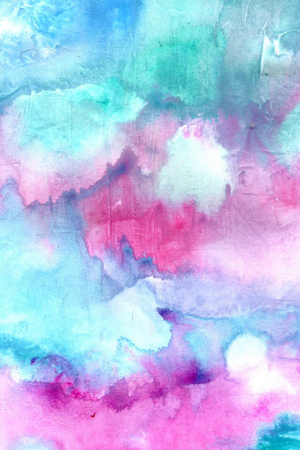
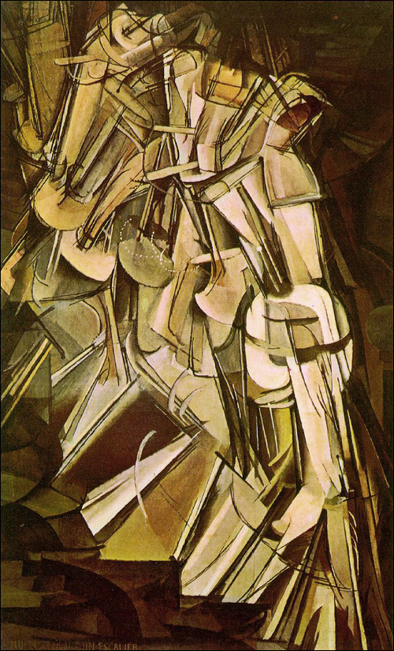

Pintar con acuarelas

La acuarela (palabra que proviene del italiano acquarella) es una pintura sobre papel
o cartulina con colores diluidos en agua. También es el nombre de la técnica empleada
en este tipo de pintura, y de los colores con los que se realiza.
Los colores utilizados son transparentes (según la cantidad de agua en la mezcla) y a
veces dejan ver el fondo del papel (blanco), que actúa como otro verdadero tono.
Se compone de pigmentos aglutinados con goma arábiga o miel. En sus procedimientos se
emplea la pintura por capas transparentes, a fin de lograr mayor brillo y soltura en la
composición que se está realizando. En Japón, la acuarela ejecutada con tinta es denominada
Sumi. En la pintura china, coreana y japonesa ha sido un medio pictórico dominante,
realizado frecuentemente en tonalidades monocromáticas negras, sepia...
Seguir leyendo...
Pintar con cubos

El cubismo fue un movimiento artístico desarrollado entre 1907 y 1914, nacido en Francia y encabezado
por Pablo Picasso, Georges Braque, Jean Metzinger, Albert Gleizes, Robert Delaunay y Juan Gris.
Es una tendencia esencial, pues da pie al resto de las vanguardias europeas del siglo XX.
No se trata de un ismo más, sino de la ruptura definitiva con la pintura tradicional.
El término cubismo fue acuñado por el crítico francés Louis Vauxcelles, el mismo que había bautizado
a los fauvistas motejándolos de fauves (fieras); en el caso de Braque y sus pinturas de L'Estaque,
Vauxcelles dijo, despectivamente, que era una pintura compuesta por «pequeños cubos». Se originó así
el concepto de «cubismo». El cubismo literario es otra rama que se expresa con poesías cuya estructura
forma figuras o imágenes que ejemplifican el tema, la rima es opcional y ni tienen una métrica específica
ni se organizan en versos.
Seguir leyendo...
Encuesta
Elige la obra que te guste más, ¿Eres un cubo o una acuarela?
Clasificaciones y obras
El arte es entendido generalmente como cualquier actividad o
producto realizado por el ser humano con una finalidad estética
y también comunicativa, mediante la cual se expresan ideas, emociones
o, en general, una visión del mundo, a través de diversos recursos,
como los plásticos, lingüísticos, sonoros, corporales y mixtos.
|
Acuarelistas
|
Obra
|
Cubistas
|
Obra
|
|
JOHN BLOCKLEY
|
La Granja
|
PABLO RUÍZ PICASSO
|
Las señoritas de Avignon
|
|
PHILIP JAMISON
|
Niebla sobre la isla de Lanes
|
JUAN GRIS
|
The Sunblind
|
|
RICHARD BOLTON
|
Puerta oxidada
|
GEORGES BRAQUE
|
Man with a guitar
|
|
DAVID MILLARD
|
Flores
|
FRENAND LEGER
|
Desnudos en el bosque
|
El arte es un componente de la cultura, reflejando en su concepción
los sustratos económicos y sociales, y la transmisión de ideas y valores,
inherentes a cualquier cultura humana a lo largo del espacio y el tiempo.
Se suele considerar que con la aparición del Homo sapiens el arte tuvo en
principio una función ritual, mágica o religiosa ,
pero esa función cambió con la evolución del ser humano, adquiriendo
un componente estético y una función social, pedagógica, mercantil o simplemente ornamental.